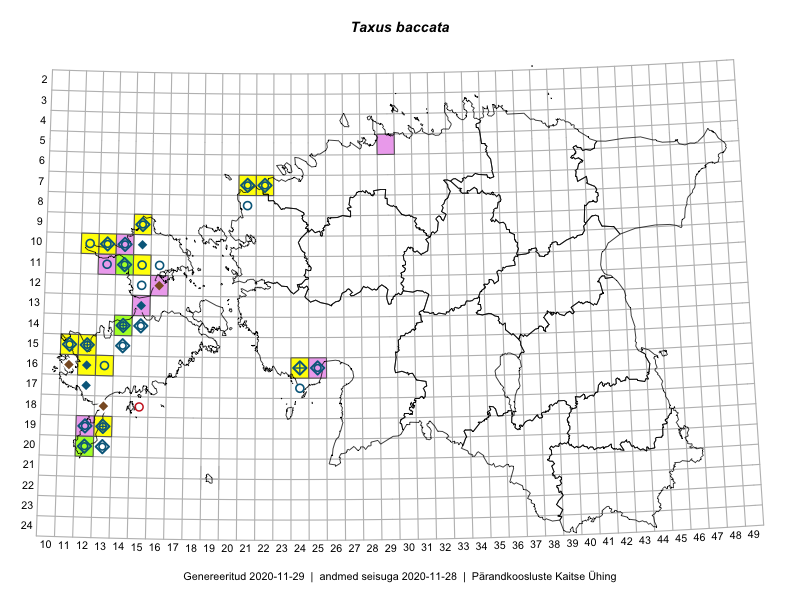

Taxus baccata
Uuendatud: 2016-12-07
Kaardile koondatud taksonid: Taxus baccata L.

Kaart põhineb 21 vaatlusel. Taime on leitud 10 ruudust.
| Ruut | Vaatleja(d) | Vaatlusaeg | Kirje tüüp | Viide andmebaasikirjele |
|---|---|---|---|---|
| 16-24 | Indrek Tammekänd | 2015-09-18 | punkt | vaata PlutoFis |
| 11-15 | Eeva-Maria Jeletsky, Tarmo Niitla | 2015-06-27 | punkt | vaata PlutoFis |
| 11-15 | Eeva-Maria Jeletsky, Tarmo Niitla | 2015-06-27 | ruut/ala | vaata PlutoFis |
| 11-17 | Eeva-Maria Jeletsky, Tarmo Niitla | 2015-06-20 | ruut/ala | vaata PlutoFis |
| 15-12 | Triin Reitalu | 2015-05-12 | ruut/ala | vaata PlutoFis |
| 15-11 | Mari Reitalu, Oliver Parrest | 2015-07-16 | ruut/ala | vaata PlutoFis |
| 17-42 | Kirsi Loide, Marje Loide | 2015-04-29T07:00Z | ruut/ala | vaata PlutoFis |
| 18-42 | Kirsi Loide, Marje Loide | 2015-04-30T07:00Z | ruut/ala | vaata PlutoFis |
| 19-42 | Kirsi Loide, Marje Loide | 2015-05-01T07:00Z | ruut/ala | vaata PlutoFis |
| 17-42 | Kirsi Loide, Marje Loide | 2015-07-27 | ruut/ala | vaata PlutoFis |
| 19-42 | Kirsi Loide, Marje Loide | 2015-07-29 | ruut/ala | vaata PlutoFis |
| 16-12 | Mari Reitalu, Triin Reitalu | 2015-04-30 | ruut/ala | vaata PlutoFis |
| 16-12 | Triin Reitalu, Mari Reitalu | 2015-04-30 | punkt | vaata PlutoFis |
| 15-11 | Oliver Parrest, Mari Reitalu | 2015-07-16 | punkt | vaata PlutoFis |
| 10-13 | Sander Laherand, Maret Gerz, Nele Jõessar | 2016-08-10 | punkt | vaata PlutoFis |
| 10-13 | Sander Laherand, Maret Gerz, Nele Jõessar | 2016-08-10 | punkt | vaata PlutoFis |
| 10-13 | Sander Laherand, Maret Gerz, Nele Jõessar | 2016-08-10 | punkt | vaata PlutoFis |
| 10-13 | Sander Laherand, Maret Gerz, Nele Jõessar | 2016-08-10 | punkt | vaata PlutoFis |
| 10-13 | Maret Gerz, Sander Laherand | 2016-08-10 | ruut/ala | vaata PlutoFis |
| 15-12 | Toomas Kukk, Ott Luuk | 2012-09-07 | punkt | vaata PlutoFis |
| 15-12 | Toomas Kukk, Ott Luuk | 2012-09-07 | punkt | vaata PlutoFis |